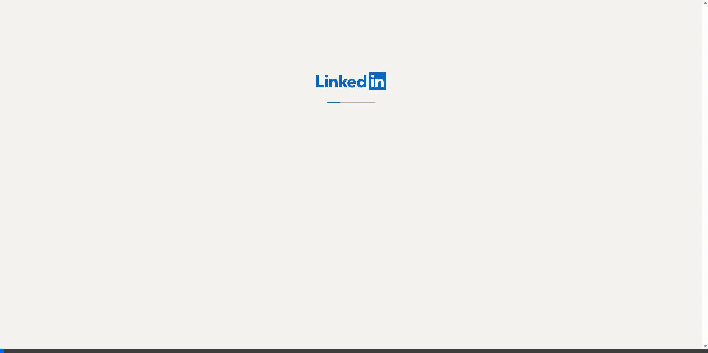

Recordings
Demo videos and screen recordings

LinkedIn Profile View
A walkthrough of my LinkedIn professional profile, showcasing my experience, skills, and professional network.
January 18, 2026
Demo videos and screen recordings

A walkthrough of my LinkedIn professional profile, showcasing my experience, skills, and professional network.